Um rio que nasce em Minas, atravessa o sertão e chega ao mar no Nordeste. Aqui está o São Francisco de verdade: as carrancas na proa dos barcos, o Caboclo d'Água das histórias, a ararinha-azul que voltou a voar e os peixes que só existem nessa bacia.
O Rio São Francisco nasce na Serra da Canastra, em Minas Gerais, e corre cerca de 2.800 quilômetros, inteiro dentro do Brasil. Atravessa a Bahia rumo ao norte; ao chegar em Pernambuco, vira para o sudeste, faz a divisa entre Alagoas e Sergipe e encontra o Atlântico entre Piaçabuçu, em Alagoas, e Brejo Grande, em Sergipe. A bacia dele é a quarta maior da América do Sul.
O caminho atravessa o sertão. Na beira do rio ficam Pirapora, em Minas, as cidades vizinhas de Juazeiro, na Bahia, e Petrolina, em Pernambuco, ligadas por uma ponte, o Xingó e, perto da foz, Penedo, em Alagoas.
Muitos peixes do rio só existem nessa bacia: a curimatã-pioa, a curimatã-pacu, a matrinxã, o a piranha do São Francisco e o dourado do rio, todos desta página. E o rio é também terra de barqueiros, de pescadores e de artesãos que esculpem carrancas.
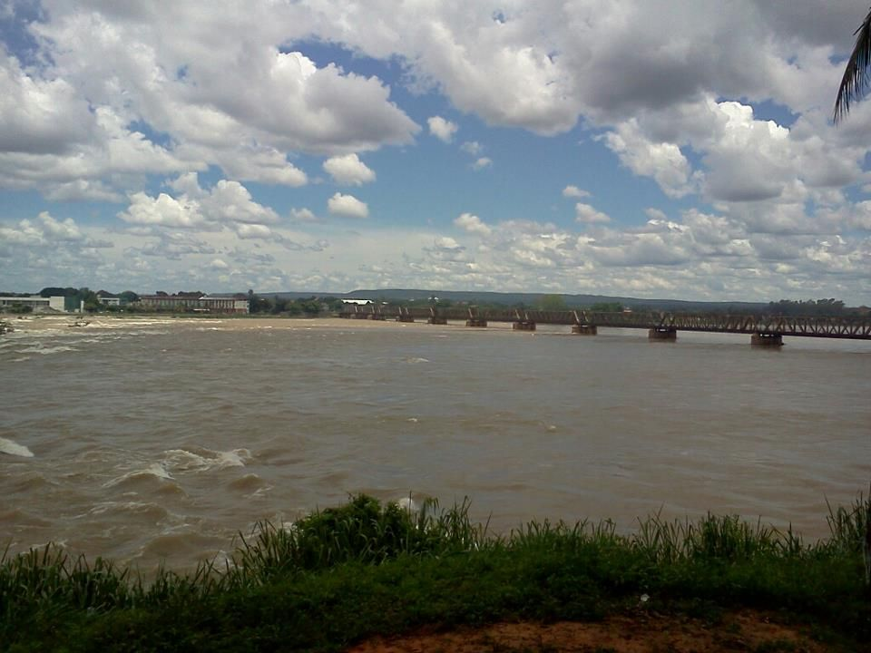
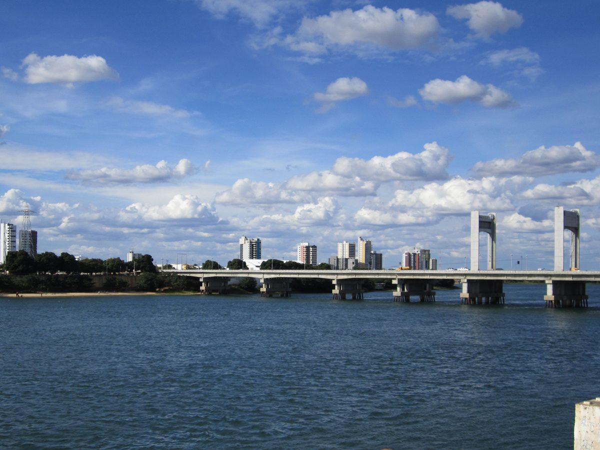
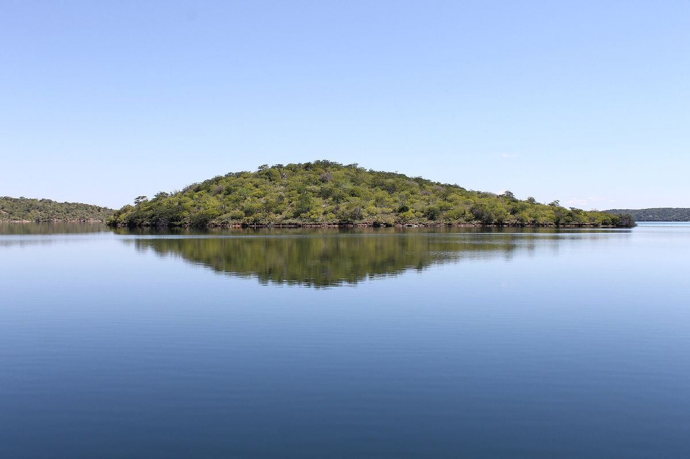
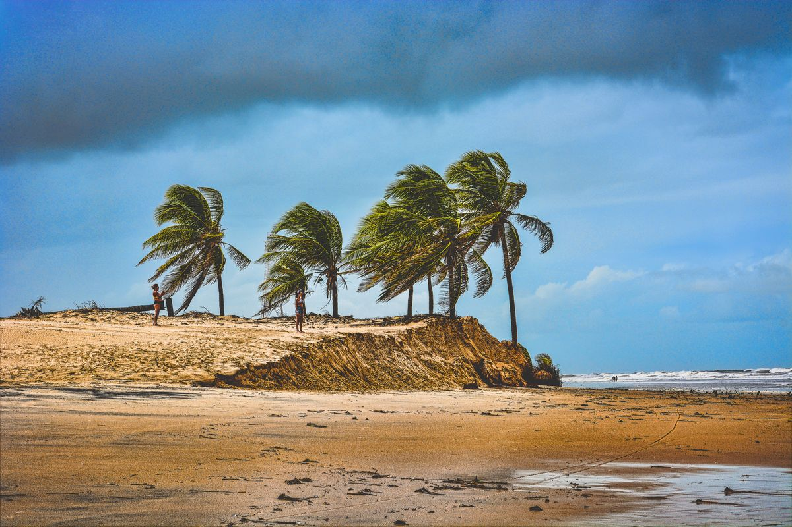
A carranca é uma figura entalhada em madeira, meio gente e meio bicho, de juba grande, olhos humanos e cara de fera, muitas vezes pintada de vermelho e preto. Ela ia na proa dos barcos que desciam o rio de Minas Gerais para o Nordeste, e os barqueiros acreditavam que ela trazia sorte e afastava os maus espíritos, as tempestades, os bichos perigosos e o naufrágio. Há quem conte que a carranca gemia alto quando o barco ia afundar.
A origem é discutida: há pesquisadores que ligam a tradição à África, outros aos povos indígenas. Com o fim dos barcos a remo e a vapor, as carrancas saíram da proa e viraram arte. Petrolina e Juazeiro são os grandes centros, e Santa Maria da Vitória, na Bahia, e Pirapora, em Minas, também têm tradição forte. O mais famoso dos carranqueiros, Mestre Guarany, de Santa Maria da Vitória, viveu 101 anos e teve obra exposta do MASP a Paris.
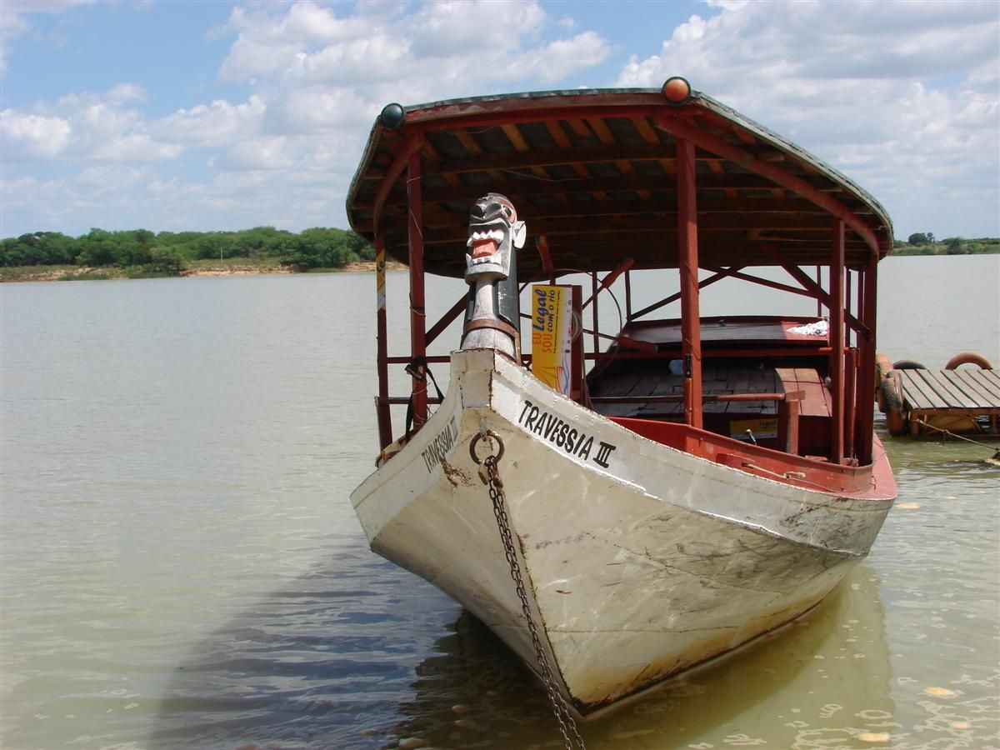
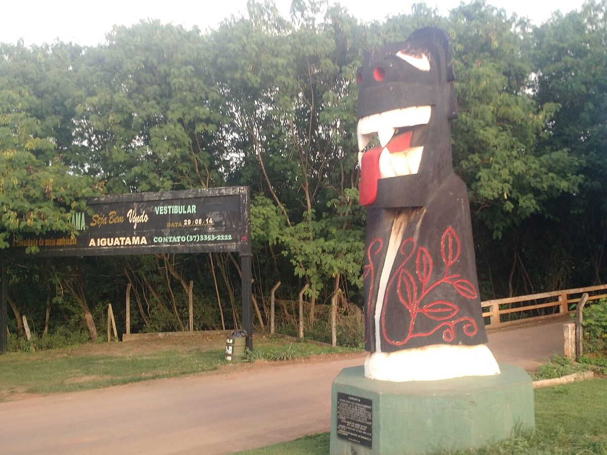
O cenário do São Francisco é o do sertão: os cactos na margem, os bichos da Caatinga e a carranca na proa.
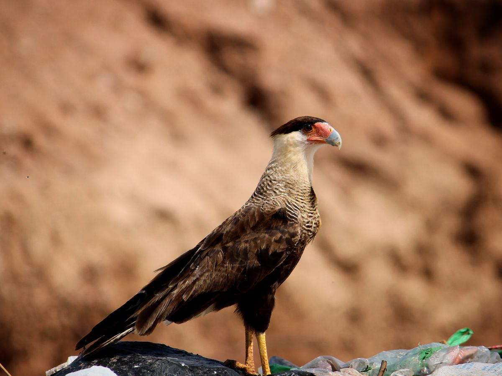
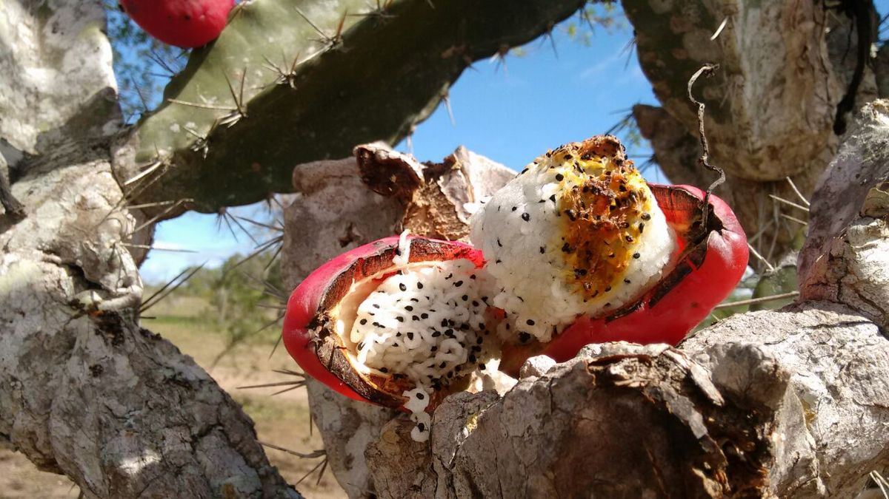
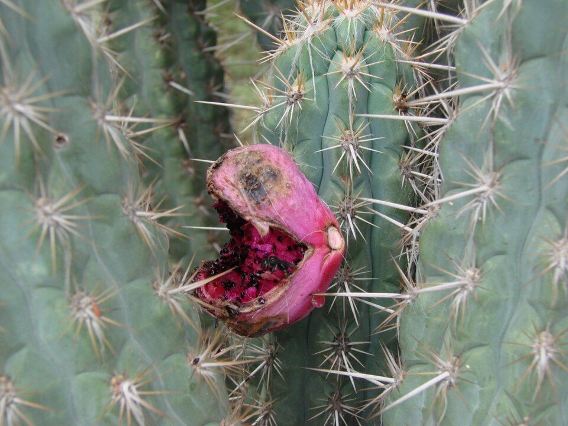
Parente distante dos falcões, come quase tudo: carniça, lagarto, cobra, sapo, ovo, fruta e até resto de peixe nos acampamentos de pesca. Também rouba comida de outras aves. O nome vem do tupi e imita o grito dele, que ele dá com o pescoço dobrado para trás e a cabeça encostada nas costas.
Só existe no Brasil, na Caatinga do Nordeste. Quando se assusta, fecha a couraça numa bola de uns trinta centímetros. Foi o bicho do Fuleco, o mascote da Copa do Mundo de 2014, e está ameaçado de extinção: o ICMBio prepara um plano nacional para protegê-lo.
O cacto grande da Caatinga, que cresce nas partes mais secas do sertão, em solo raso e até em cima de pedra. Na seca, é um dos principais alimentos do rebanho: os agricultores cortam os ramos e queimam os espinhos para dar a cabras, ovelhas e bois.
Cacto cheio de espinhos fortes. Na seca braba, o fruto e o caule viram comida de gente e de bicho, mas é a última escolha, justamente por causa dos espinhos. Também serve de cerca viva, e os espinhos já foram usados como agulha de bordado.
A ararinha-azul (Cyanopsitta spixii) é uma arara pequena da Caatinga da Bahia. Em 1986, a última população conhecida na natureza tinha só três aves. O último macho selvagem, acompanhado de perto pelos pesquisadores, sumiu em 2000, e a espécie passou a ser considerada extinta na natureza. Sobraram as ararinhas dos criadouros.
Em 2012 o ICMBio lançou o plano para trazê-la de volta. Em 2018 nasceram a Área de Proteção Ambiental e o Refúgio de Vida Silvestre da Ararinha-Azul, 120 mil hectares em Curaçá e Juazeiro, na beira do São Francisco. Em 2020, 52 ararinhas chegaram de um criadouro na Alemanha e passaram cerca de dois anos se adaptando num viveiro em Curaçá. E em 11 de junho de 2022 oito ararinhas-azuis, cinco fêmeas e três machos, foram soltas na Caatinga, junto com araras-maracanã.
No jogo, a ararinha-azul é o bicho de estimação do São Francisco. De verdade, ela é uma das histórias de volta mais bonitas da natureza brasileira.
Quem vive na beira do São Francisco conta do Caboclo d'Água: um ser musculoso, troncudo e baixo, de pele cor de bronze, com um olho só no meio da testa. Dizem que ele protege o rio, que pode estar em vários lugares ao mesmo tempo e virar bicho, e que mora numa gruta funda cheia de ouro. Quando se zanga, agarra o fundo das canoas e balança até virar o barco, e espanta os peixes de quem pesca.
Para se defender, os barqueiros punham a carranca na proa, pintavam uma estrela branca no casco e cravavam facas no fundo da canoa, porque o aço afastaria os seres encantados. E um pedaço de fumo oferecido acalmaria o Caboclo por um tempo.
Os doze peixes do São Francisco no jogo, do piau-três-pintas à Curimatã do Caboclo. Quando o nome popular vale para mais de uma espécie, o cartão avisa.
Piau pequeno, de corpo comprido, que só existe na bacia do São Francisco e chega a uns 28 centímetros. Os casais desovam no meio da vegetação densa. Abaixo da represa de Três Marias, os pesquisadores viram que ele só conseguia se reproduzir no trecho onde o rio recebe a água do Rio Abaeté.
Uma piranha menor, também chamada de piranha-branca, que chega a uns 29 centímetros e vive na bacia do São Francisco. Na região da represa de Três Marias, a desova dela é mais forte de novembro a fevereiro, quando a água está mais quente e chove mais.
Outro piau do rio, que passa um pouco dos 30 centímetros. Na represa de Três Marias e no rio logo abaixo, a desova dele se concentra nos meses quentes e de chuva, e o peixe da represa cresce mais que o do rio. As fêmeas ficam maiores que os machos.
Piranha é nome de várias espécies. A do mapa é a Pygocentrus piraya, conhecida só na bacia do São Francisco e tida como a maior de todas as piranhas: passa dos 38 centímetros e dos três quilos. É peixe de pesca esportiva, e a mordida machuca gente.
O pacu deste rio é parente das piranhas, da mesma família, mas tem o corpo alto e redondo. Só existe na bacia do São Francisco e passa dos 38 centímetros e dos dois quilos.
Cascudo é nome de muitos bagres de couraça, da família dos loricariídeos. Um deles, o Hypostomus francisci, vive no alto São Francisco, sempre no fundo, e chega a uns 36 centímetros. Como os parentes do mesmo gênero, consegue respirar ar quando precisa.
Só existe na bacia do São Francisco e passa dos quarenta centímetros. Tinha sumido da represa de Três Marias no fim dos anos 1970 e voltou a aparecer em meados dos anos 1990, depois que a Codevasf começou a soltar filhotes criados nos seus centros.
Parente do dourado, menor e mais prateado, que chega a uns 50 centímetros. Foi descrita em 1850 a partir de peixes do próprio Rio São Francisco. É predadora, fica no topo da cadeia alimentar do rio e, na represa de Três Marias, desova no fim e no começo do ano.
Também chamada de curimba, só existe na bacia do São Francisco. Vive perto do fundo e é um peixe de migração: sobe e desce o rio dentro da água doce. Passa de meio metro e de quatro quilos.
A curimatã grande do rio, também só da bacia do São Francisco, que chega perto de sete quilos. Com radiotransmissores, os pesquisadores viram que, na primeira subida das águas da estação chuvosa, metade dos peixes subiu o rio de 100 a 365 quilômetros, e a outra metade ficou onde estava.
O dourado do São Francisco só ganhou nome científico próprio em 2007; antes era confundido com o dourado do Prata. Come peixe, migra para se reproduzir na estação das chuvas, e os filhotes crescem nas lagoas da margem. É dos peixes mais procurados pela pesca no médio São Francisco e passa de 90 centímetros.
Não existe: é a curimatã que, no jogo, o Caboclo d'Água guarda para si. Nas histórias da beira, o guardião do rio espanta os peixes de quem pesca, e um pedaço de fumo oferecido o acalmaria por um tempo. A lenda inteira está mais acima.
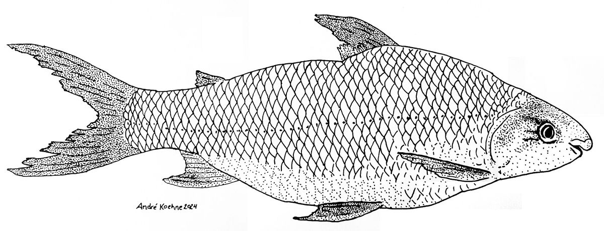
Com as primeiras chuvas, os peixes migradores sobem o rio para desovar: é a piracema. As curimatãs sobem com a primeira cheia da estação, e os filhotes de muitos peixes vão crescer nas lagoas da margem. Por isso, na bacia do São Francisco, a pesca para no defeso, de 1º de novembro a 28 de fevereiro, e nas lagoas da margem a proibição vai até 30 de abril.
Desde 1983, a Codevasf cria filhotes de peixes nativos e solta no rio, o que se chama peixamento. Começou na represa de Três Marias, em Minas, e hoje são vários centros na bacia: Três Marias e Gorutuba, em Minas, Xique-Xique, na Bahia, Bebedouro, em Pernambuco, Betume, em Sergipe, e Itiúba, em Alagoas. Em média, passam de seis milhões e meio por ano os filhotes nativos soltos na bacia: pirá, curimatã-pacu, curimatã-pioa, matrinxã, piau, pacamã, cascudo e piaba.
Os pais são capturados com licença e se reproduzem nos centros, e os filhotes crescem até o tamanho de soltar. Muitas vezes a própria comunidade da beira solta os peixes, depois de uma conversa sobre o rio. E dá resultado: depois do peixamento, a pesca das espécies soltas aumentou, e a matrinxã voltou a Três Marias.
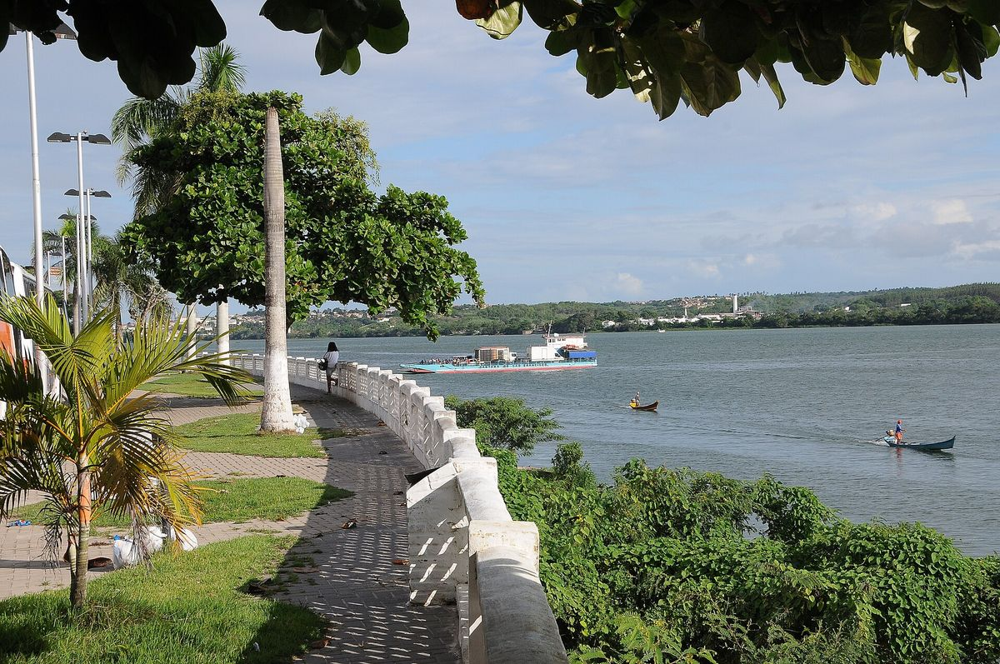
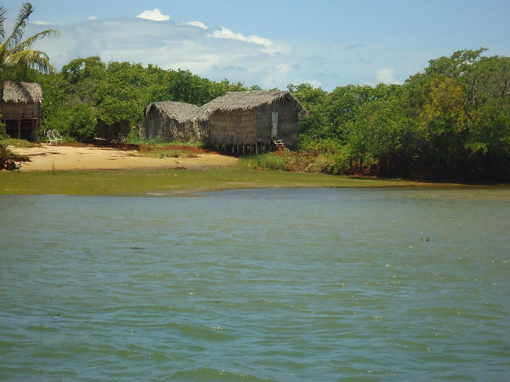
Respeitar a piracema é o que garante a curimatã do ano que vem. E o pacamã e o pirá, bagres do rio que estão na lista de espécies ameaçadas, dependem do peixamento e de ficar na água para voltar a ser comuns.
Todas do Wikimedia Commons, com licença que permite uso comercial. Foram reduzidas para a página.


.jpg){kind=link}
.jpg){kind=link}


_02.jpg){kind=link}
.jpg){kind=link}
_by_Andr%C3%A9_Koehne.jpg){kind=link}